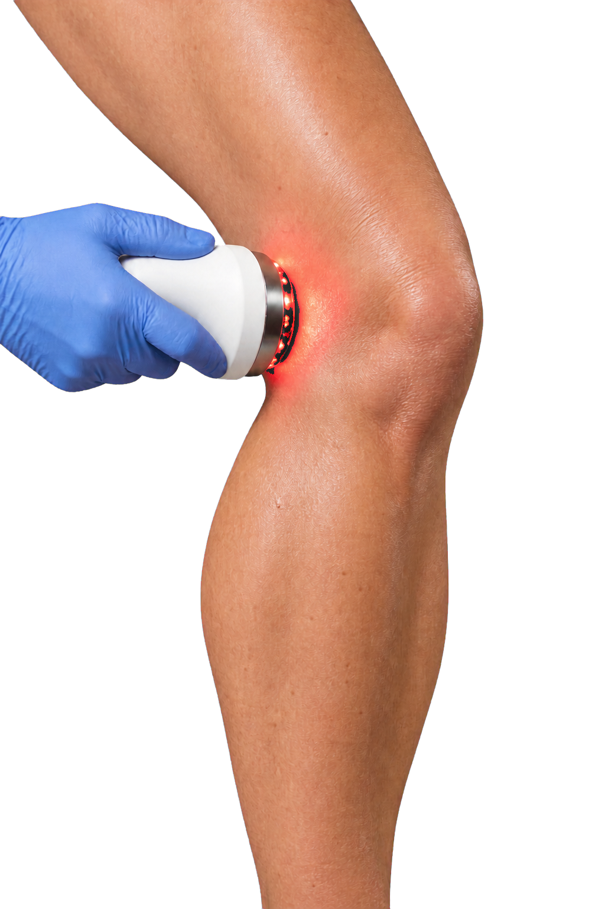

LUZ DE BAIXA INTENSIDADEPBM NÃO É PROMESSA PRONTA.
Estudada para modular respostas locais — sem prever resposta igual para todo mundo.

LUZ DE BAIXA INTENSIDADEEstudada para modular respostas locais — sem prever resposta igual para todo mundo.